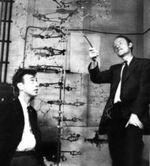
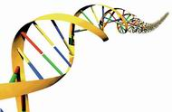

|
|
Proyecto Genoma
Nuestra fibra más íntima
Ninguno de nosotros necesita que nos enseñen a reír. Tampoco nadie nos enseña a reconocer rostros, digerir una manzana, construir nuestro propio cuerpo, hacer el amor. Simplemente lo hacemos. Y en verdad son tareas –muchas de ellas– extraordinariamente complejas, precisas y arduas que realizamos como si tal cosa. Lo cierto es que para hacer gran parte de las cosas que hacemos, para participar de esta apasionante aventura que llamamos vida contamos, aún sin saberlo, con un conjunto de precisas y redundantes instrucciones.
Nuestro conjunto de instrucciones bien podría caber en una biblioteca mediana de unos 1.000 libros. Uno podría acercarse a un estante, bajar un libro, y en el capítulo titulado “Cómo enfrentar el frío” encontrar la página que enseña a fabricar el pelo. Pero la naturaleza nos ha dotado de un sistema mucho más eficiente en el almacenaje de la información de modo que todas nuestras instrucciones caben adentro de una célula, más aún, adentro del núcleo de una célula. No necesita más lugar que ése, una reducida esferita de una milésima de milímetro de diámetro… y todavía sobra espacio. Pero más sorprendente aún es que todas nuestras células -cada una de las aproximadamente 100 mil millones de células que forman nuestro cuerpo- poseen un juego completo de instrucciones... una biblioteca completa ¡y por duplicado!
Las responsables de tamaña eficiencia son unas moléculas maravillosas llamadas ácido desoxirribonucleico (qué nombre tan químico, ¿no?; ADN, más familiar). Consisten en una asociación de millones y millones de átomos que se enlazan formando larguísimas y delgadas cadenas. Nuestras células tienen 23 (si contamos los duplicados, 46) cadenitas que si las uniéramos unas a otras y las estirásemos alcanzarían 1,8 metros. En el núcleo de las células, claro, se encuentran densamente ovilladas. |
| |
|  |
|
La clave de la vida
En abril de 1953, dos científicos estadounidenses, James D. Watson y Francis Crick, dilucidaron la estructura fina del ADN. Las cadenitas eran más bien escaleras caracol que ellos describieron como una doble hélice. Los peldaños de la escalera están construidos por pares de moléculas llamadas bases (pares de bases, pb) que no están pegadas entre sí, sino simplemente “encajadas” como piezas de rompecabezas. Estas “bases” son sólo de cuatro tipos y las simbolizamos con las letras A, T, C y G que son las iniciales de sus nombres químicos. Y encajan A con T y C con G. No hay peldaños TC, ni GA… solamente encontramos escalones AT, TA, CG y GC. Sólo cuatro tipos diferentes de escalones dispuestos a lo largo de la escalera de un modo aparentemente caótico, azaroso.
Es fácil deducir algunas cosas. Los dos lados de la escalera son complementarios, y como cada medio peldaño está solamente “encajado”, no pegado, la escalera podría separarse por la mitad todo a lo largo. Si los lados de la escalera se separasen, bien podríamos reconstruir junto a cada mitad el lado faltante leyendo del que nos queda a mano y colocando el medio-peldaño ausente respetando la complementariedad. Así, justamente, hacen las células, y así justamente funciona la cuestión de la reproducción y la herencia. Por otro lado A, T, C y G son, si se quiere, las “letras” con las que están escritas las instrucciones. Nuestra biblioteca, por lo tanto, tiene un alfabeto de cuatro letras.
Después del descubrimiento de Watson y Crick que, obviamente, les valió el premio nobel, el avance científico fue acelerado. Aparecieron respuestas certeras y concretas para antiguos interrogantes de la humanidad. Cómo funciona la herencia, cómo procede la evolución, cómo funciona la reproducción… en todas ellas el ADN es la clave. También aparecieron nuevas preguntas: cómo están escritas las instrucciones, cómo hace la célula para leerlas y obedecerlas. Para éstas también se obtuvieron respuestas. Teníamos cuatro letras diferentes, recuerdan, no 27 como nuestro alfabeto sino sólo cuatro: A, T, C y G. Bien, ahora, en nuestro idioma cada palabra tiene un número variable de letras: Nobel tiene cinco y descubrimiento tiene catorce. En la célula las palabras tienen siempre tres letras. Por ejemplo AAT, o TAG. Cada palabra significa una instrucción química. La célula lee la palabra y sabe que tiene que unir cierta molécula (y no otra) a la molécula anterior, y así va fabricando las proteínas. Dicho sea de paso, las proteínas son las principales moléculas de las que está hecho nuestro cuerpo: el material, los ladrillos básicos. Piel, músculo, pelo, uña, todo está hecho de proteínas. Hay proteínas que tienen función digamos esquelética: ser ladrillo, formar una pared, y proteínas que tienen una función, digamos, operativa (también llamadas enzimas): ensamblar ladrillos para construir una pared. Pero todas son proteínas. En nuestro cuerpo puede haber unos 30 mil tipos diferentes de proteínas. Pero volvamos a las letras y las palabras. Al conjunto de significados entre cada palabra y la molécula que representa se lo llama “el código genético”. Descifrar el código genético fue una tarea de mucho ingenio.
Si tres letras forman una palabra, un conjunto de palabras con sentido forma una oración. Esto requiere que el código genético incluya –y de hecho incluye– signos de puntuación: inicio y fin de la oración. Hay una palabra que significa “aquí empieza una proteína” y palabras que significan “aquí termina una proteína”. Una oración sería justamente lo que hace falta para construir una proteína. Y a eso se lo llama gen. Un gen típico puede tener unas 500 pb, mientras que el largo total de la doble hélice humana, es decir, el genoma, contiene 3.000 millones de pares de bases (más el duplicado, no nos olvidemos) [Recuadro 3].
Hay algo que no cierra… Si cada gen mide promedio 500 pares de bases, y si hay 30 mil en todo el genoma, eso nos da unos 15 millones de pares de bases ocupados en instruir la construcción de proteínas. ¡Pero el genoma es muchas veces más grande! ¿Para qué sirve el resto? Hmmm... posiblemente para nada. Parece ser que nuestro genoma, al igual que el de las especies eucarióticas (aquellas cuyas células poseen núcleo), está lleno de letras sin sentido, "basura" –dicen algunos biólogos mal hablados–, como si nuestra biblioteca de instrucciones tuviese algunas pocas páginas en algunos pocos libros en algunos estantes que dijesen cosas interesantes y, en todo el resto, el 98 %, hubiese sólo letras, palabras sin sentido.
Todo esto es fácil contarlo ahora, pero recién en 1977 unos señores llamados Allan Maxam, Walter Gilbert y Frederick Sanger –este último en forma independiente- lograron desarrollar sendos métodos para leer (en la jerga de los biólogos secuenciar) la molécula de ADN, es decir, para dilucidar el orden -la secuencia de bases- en un pequeño segmento de doble hélice. Y pudieron hacerlo porque unos años antes se había descubierto el modo de amplificar pequeñas cantidades de ADN con un método llamado ADN recombinante y clonación, que otro día les cuento. |
| |
Recién salido de imprenta
Este es el aspecto que podrían tener las páginas de nuestra biblioteca de instrucciones
72501 GAGAATGCACAGAGCAGT
72502 TGTGCGCACAGTAGCAGT
72503 ATGTGCGCGGAAGTAGAG
72504 ATGTGCGCAAGCAGATTA
72505 GGGAATGCACAGCGCAGT
72506 TGTGCGCAGCAGTAGAGT
72507 ATGTGCGCGGGAAGAGTA
72508 AATTGGCACAGCAGCAGT
72509 TGTGCGCAGCAGTAGCAG
72500 ATGTCGCAAGCAGTATTA
72511 GAGAATGCACAGCAGCAT
72512 TGGCGCAGCAGTAGCAGT
72513 ATGTGCGCGGGAAGTAAG
72514 TGTGCGCAAGCAGTATTA
72515 GGTTATGCACAGCAGAGT
72516 TGTGCGCAGCAGTAGCAT
72517 ATGTGCGCGGGAAGAGTA
72518 ATTGTGCACAGCAGCAGT
72519 GCGCCGCAGCAGTAGCAT
72520 AGTGCGCAAGCAGGCGCA
72521 GAGAATGCACAGCACAGT
72522 TTGCGCAGCAGTAGCAGT
72523 ATGTGCGCGGAAGTAGAG
72524 ATTGCGCAAGCAGTATTA
72525 GTTATGCACAGCAGCAGT |
|
| |
 |
| Cariotipo humano, o el conjunto de los 23 pares de cromosomas que componen nuestro GENOMA |
| |
 |
| |
| |
|
El proyecto
A mediados de los 80 ya se habían encontrado, aislado y secuenciado unas decenas de genes, casi todos ellos de importancia biológica, científica y médica. Y eran muchas las voces de científicos que resaltaban los beneficios de contar con la secuenciación completa del genoma humano y propiciaban la creación de un emprendimiento con ese fin. Tres avances tecnológicos significativos hicieron que el resto de la comunidad científica estimase la idea como posible. Uno de ellos es la invención de la PCR, un método de amplificación del DNA mucho más sencillo y eficaz que los anteriores. Es imposible intentar secuenciar un gen de 500 o 5.000 pares de bases que se hallaba mezclado con otros 5.000 millones de pares de bases. El sistema PCR amplifica, es decir, multiplica la cantidad de muestras del segmento que se quiere secuenciar varios miles de millones de veces. El segundo avance consistió en el desarrollo de la primera máquina secuenciadora automática, que permitió abandonar las laboriosas reacciones químicas en tubos de ensayo, agitación, incubación, agregado del siguiente reactivo y así… un tedioso y laborioso protocolo de manipulaciones e interpretaciones interminables que los técnicos estuvieron felices de abandonar. El tercero fue el desarrollo de los cromosomas artificiales en levadura (CAL), una técnica que consiste en pedirle permiso a la levadura para que crezca y se desarrolle con un cromosomita ajeno, je, je… un pedacito de cromosoma humano. Luego, mientras hacemos el pan…
Por fin, y luego de extensos cabildeos, con el concurso oficial del gobierno de Estados Unidos, institutos de investigación de todo el mundo y algunas empresas privadas, se decidió crear el Proyecto Genoma Humano (PGH). Era septiembre de 1988. Se calculó un plazo de alrededor de 35 años y un presupuesto estimado de 3.000 millones de dólares. El 1 de octubre de 1990 comienza a funcionar oficialmente el PGH y se nombra director al propio Watson, quien estableció una reserva del 3 por ciento del presupuesto para el estudio de las connotaciones y problemas éticos que pudiesen surgir, un tema importante que bien merece un recuadro (Rec.: Hay cuestiones preocupantes).
Básicamente el proyecto es un consorcio mundial con una dirección que distribuye las tareas: este sector de este cromosoma para vos, este otro sector de ese otro cromosoma para aquel, y así. Y va recibiendo, acumulando, ordenando y comparando los resultados que llegan de todas partes del mundo. Acá estaba uno de los principales problemas: cómo ordenar la información recabada. Las páginas de la biblioteca llegaban de a montones pero todas venían sin numerar ni decir a qué libro o capítulo pertenecían. Y si las miramos una y otra vez vemos que todas las páginas son iguales, AATTCGATTGCAGTACG… nunca un título, un subtítulo, un dibujito… es que así son los genomas. La solución a este problema crucial la dieron los STSs.
El primer paso consiste en fragmentar los cromosomas en pedacitos chiquitos y desiguales. Esto no se hace a cuchillo sino con unas herramientas bioquímicas llamadas enzimas de restricción. Luego los pequeños fragmentos se etiquetan con otra herramienta llamada STS, del inglés sequence tag sites (sitios de secuencias rótulo), consistente en unas sondas de DNA artificial que recorren, buscan y encuentran una secuencia complementaria y ahí se pegan funcionando como hito. A continuación se buscan los solapamientos entre los fragmentos, lo cual permite ordenarlos y entonces sí, cada cromosoma sería un estante de la biblioteca, cada CAL un libro, cada fragmento un capítulo, cada STS un número de página. Así se genera un ordenamiento, un orden lineal, arbitrario pero orden al fin... pues, manos a la obra. |
| Hay cuestiones preocupantes
La información que surge del secuenciamiento completo del genoma humano abre la posibilidad de usos de la información que debieran preocuparnos a todos. Por ejemplo será posible examinar a las personas y detectar antes de que se produzcan enfermedades latentes (como cardiopatías, predisposiciones para ciertos tipos de cáncer). ¿Podría ser esta información causa de dificultad para conseguir un empleo? ¿Podrían las empresas de seguros exigir análisis detallados de los genes para decidir si aseguran a una persona o la prima que debe pagar? ¿Qué deben hacer los médicos cuando detectan tempranamente una enfermedad que no tiene curación (como la enfermedad de Huntington)?
Qué decir de las características de la personalidad que si bien dependen de variables ambientales también tienen componentes genéticos como la inteligencia, la agresividad, la predisposición al liderazgo. ¿Estaremos preparados para manejar este conjunto de cuestiones desde la perspectiva molecular?
Así como hoy día es una realidad la terapia génica, ¿podremos modelar seres humanos? Así como hoy está admitida la cirugía estética, ¿se admitirá también la terapia génica estética? ¿Llegará a ser común el humano transgénico?
Estas cuestiones no son sencillas ni triviales. Hasta hace no mucho pertenecían a la ciencia ficción, pero nos acercamos velozmente al momento en que debemos encontrar respuestas para evitar usos indeseados. |
|
| |
|  |
| |
 |
| Imagen de una secuenciación automática de DNA. Una celda lectora de 4 colores interpreta la secuencia. |
Para qué sirve el PGH
El principal motor del proyecto fue, sin duda, su aplicación a la medicina. Hay más de 6.000 enfermedades descriptas relacionadas con la herencia y por lo tanto asociadas a un gen. Con mucho esfuerzo se habían localizado algunas y hasta se habían desarrollado terapias génicas. Algunas de ellas son fibrosis quística, anemia falciforme, distrofia muscular, diabetes, y algunos cánceres.
A partir del PGH los genes quedaron al alcance de los investigadores y el desarrollo de las terapias cobrará un impulso muy grande. Existen muchas enfermedades que no requieren terapia para evitar que se manifiesten. Alcanza con detectar la anomalía a nivel génico y tomar ciertos recaudos. La fenilcetonuria es uno de esos casos. Cuando era indetectable los pacientes sufrían daños cerebrales muy severos e irreparables. Desde que existe un sencillo examen para detectar el defecto genético los pacientes realizan una dieta estricta que les permite desarrollar una vida normal y longeva como el que más.
Otra gran beneficiada será la ciencia básica. Los genomas son registros vivos del pasado. La historia evolutiva de las especies está escrita en sus genomas actuales. Es posible descifrar esa escritura y de ello surgirá la respuesta a muchos interrogantes. El análisis comparativo de diferentes genomas encierra respuestas trascendentes. Por ejemplo el genoma humano y el de los chimpancés difieren en menos de un 1%. Sin embargo esa pequeña diferencia podría ayudarnos a comprender por qué el hombre fue capaz de desarrollar la cultura. |
|
|
|
A la caza del GEN
Los años siguientes transcurrieron más o menos como se esperaba. En cuanto a lo estrictamente científico y tecnológico, el avance en la secuenciación se hizo cada vez más rápido, lo cual era esperable, ya que se mejoraron y perfeccionaron las máquinas secuenciadoras automáticas, que con cada nuevo modelo podían atacar un segmento más extenso de DNA y resolverlo con más precisión. Algunos institutos preferían mapear en lugar de secuenciar. Como nuestra biblioteca tiene montones y montones de páginas inútiles y sin sentido y sólo de vez en cuando algunas páginas ilustres, muchos fueron los científicos que abogaron por la idea de localizar esas páginas, dejarlas marcadas y ordenadas y en tal caso secuenciar primero ésas. A este trabajo se lo llama mapear o cartografiar el genoma. Los primeros grandes triunfos se hicieron de este modo. En 1993 quedó totalmente cartografiado el cromosoma 21 y al año siguiente, el genoma entero. En 1994 los genes conocidos superaban los 5 mil y en 1996 un artículo de Science dio a conocer la ubicación de más de 16 mil.
En lo político y administrativo la cuestión no fue tan lineal ni promisoria. Los intereses económicos eran –y siguen siendo– muy grandes y los problemas empezaron temprano. Por un momento pareció que podía descubrirse un gen y patentarlo. Se desató una especie de fiebre del oro, pero no del oro sino del gen. ¿Quién era dueño de la información que se lograba? ¿El investigador?, ¿el instituto para el que trabajaba?, ¿las numerosas empresas biotecnológicas que proliferaron durante la fiebre?, ¿el PGH?, ¿el gobierno?, ¿la humanidad? Si la información tiene dueño particular, entonces corresponde una patente y la posibilidad –algún día– de empezar a barrer plata con la pala explotando algún producto medicinal o tratamiento que haga uso de la información patentada. ¿Es patentable un gen humano? Cualquier hijo de vecino diría que no, casi, casi... debido a un sentimiento de propiedad de su propio cuerpo. Pero la discusión no pasa por el ADN que tenemos metido en nuestras células sino por la información que se extrae de él, y los usos o desarrollos derivados de esa información. La discusión no es fácil ni sencilla. Las legislaciones alrededor del mundo son contradictorias y obedecen a diferentes filosofías. Hay quien bautizó esta discusión como la guerra de los genes. Las controversias condujeron a la temprana renuncia de Watson a su cargo de director, que es sucedido por Francis Collins. En el ínterin se decidió establecer en 6 meses el plazo máximo en que los investigadores podían mantener los datos sobre el genoma en reserva. Luego quedaban obligados a publicarlos. En 1996 acordaron llevar el plazo a 24 horas.
Volvamos a la doble hélice. A medida que los pares de bases se transformaban en letras de molde los científicos (quién puede con su genio) encontraban más material para analizar y sacar provecho. Ya no se trataba simplemente de secuenciar y secuenciar... había que interpretar lo que se estaba leyendo. Aquí hace su aparición una herramienta que terminó siendo vedette en el PGH: la computadora. No se trata de PCs familiares ni de softs comerciales. Se trata de súper computadoras y de programas de análisis de datos diseñados especialmente para el ADN. Una de las primeras cosas que hay que hacer cuando una página de AATTGTGCACAGTG… sale de la imprenta es fijarse si tiene sentido o no. O dicho de otro modo: si esa página codifica para una proteína o es pura basura. Interpretar eso no es nada fácil. Para empezar hay que leer de izquierda a derecha como en nuestro idioma, y de derecha a izquierda como en árabe: así funciona el ADN (por suerte como en chino, de arriba abajo, es imposible). Nada en el ADN indica cuál es la primera ni la segunda ni la tercera letra de las palabras, de modo que en cada sentido hay tres marcos de lectura posibles. En definitiva cada hoja hay que leerla seis veces buscando palabras de inicio de proteína que no finalicen tres palabras después, eso no tendría sentido. No… mejor dejarle este trabajo de búsqueda a las computadoras. También es importante buscar secuencias repetidas, y hablamos de segmentos de cientos o miles de bases. Las repeticiones aparecen en un mismo y en diferentes cromosomas. También es importante la identificación de las diferencias entre genomas de diferentes personas. Variabilidad de caracteres, razas y enfermedades genéticas, todo ello tiene su correlación en el mapa genético. Ni qué hablar de la comparación del genoma humano con el de otros bichos. En esta búsqueda –que también habrá que dejársela a las computadoras– está la respuesta a interesantes interrogantes que tienen que ver con la evolución y con la “humanidad”. Mientras el PGH estaba en marcha se completó, o casi, la secuenciación de los genomas de más de media docena de especies, desde virus, pasando por bacterias, hongos, un gusano, una mosca, una planta, hasta mamíferos superiores como el ratón.
En 1998 la empresa privada hizo una fuerte apuesta: creó un grupo de investigación que compitiera con el PGH. Celera Genomics era su nombre y su dueño, el científico Craig Venter, anunció que terminaría el secuenciamiento completo antes del 2001. Los presidentes de Estados Unidos y de Gran Bretaña, Bill Clinton y Tony Blair, pidieron públicamente que el conocimiento del genoma humano fuera patrimonio de la humanidad. Ese día las empresas que financiaban a Celera perdieron millones en la bolsa. Pero a la semana siguiente Venter, que no es ningún zonzo, anunció que tenía más del 95 % de los genes humanos secuenciados. Y las acciones volvieron a subir. El consorcio público y el privado estaban condenados a entenderse, y así lo hicieron. El 26 de junio del 2000 anunciaron juntos con bombos y platillos y con los súper presidentes también, que se había terminado el primer borrador de la secuencia completa. El PGH publicó sus resultados en la revista Nature el 15 de febrero del 2001; y Celera en Science, un día después.
Si bien gran parte del análisis de la información -accesible a cualquiera que navegue por internet- ya está en estado avanzado, de él surgirán respuestas que la ciencia viene persiguiendo desde hace mucho tiempo. La herramienta de la que desde ahora dispone la humanidad inaugurará una nueva era en la medicina, en las terapias génicas y en las ciencias biológicas, y sobre todo permitirá plantear nuevas preguntas que hasta hoy no pudimos ni imaginarnos. En las páginas de los libros de nuestra biblioteca de intrucciones, aún en las que no tienen sentido –cualquier biólogo lo sabe–, hay mucho para preguntar, hay mucho para entender.
|
| |
 |
Glosario
Amplificar Copiar repetidamente una pieza de ADN
Base Molécula integrante del DNA responsable de la complementariedad
CAL Cromosoma artificial que las levaduras amplifican durante su reproducción como si fuesen propios
Eucariótico Organismo cuyas células poseen núcleo. Los animales, las plantas y los hongos son todos eucarióticos; el resto de los organismos, no.
Gen Porción o segmento de ADN que instruye la síntesis de una proteína
Genoma Totalidad del material genético de un organismo
Proteína Molécula biológica constitutiva de los seres vivos
Secuenciar Determinar la sucesión de la disposición lineal de las bases en el ADN
STS Secuencia de ADN que sirve para marcar e identificar un sitio preciso |
|
| |
 |
| Craig Venter y Francis Collins en la tapa de TIME |
|
| |
|
| |
|
Artículo
publicado para el programa Con/Ciencia. Algunos derechos reservados.
Se permite su reproducción citando la fuente. Última actualización jul-09. Buenos Aires, Argentina. |
|